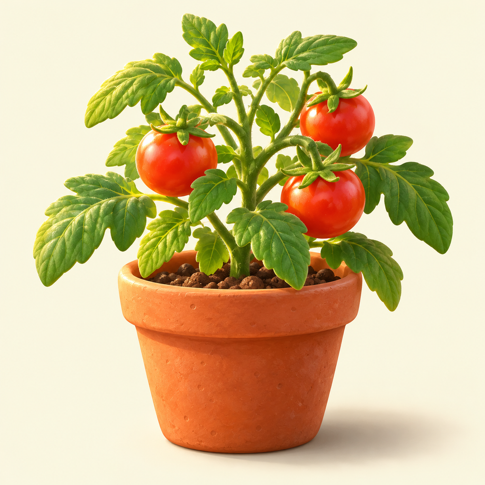
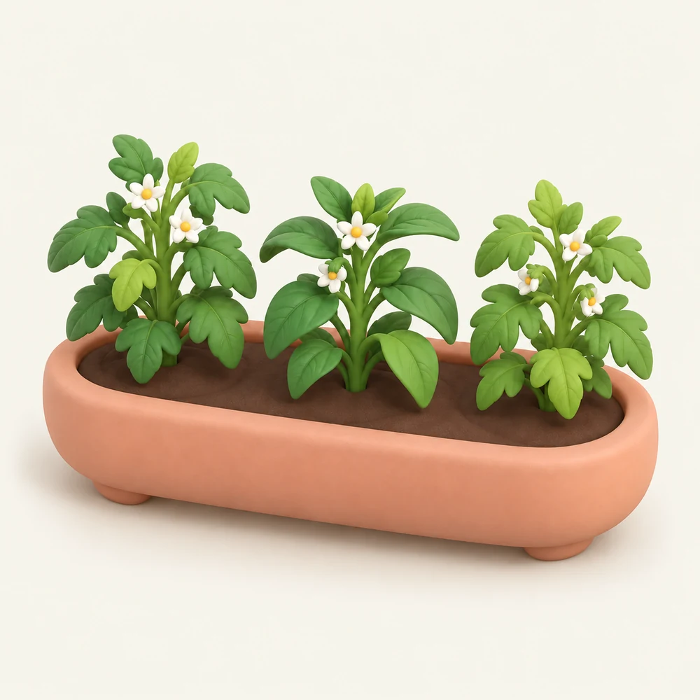
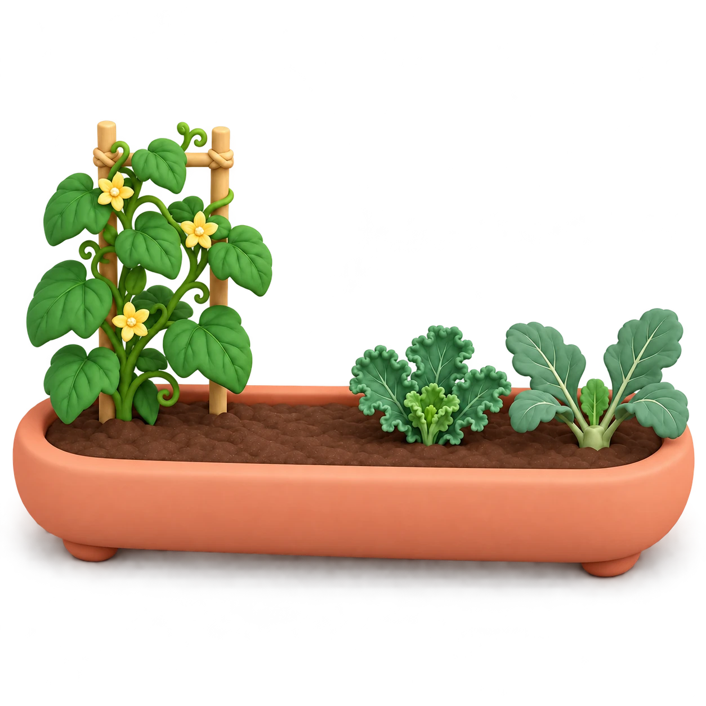
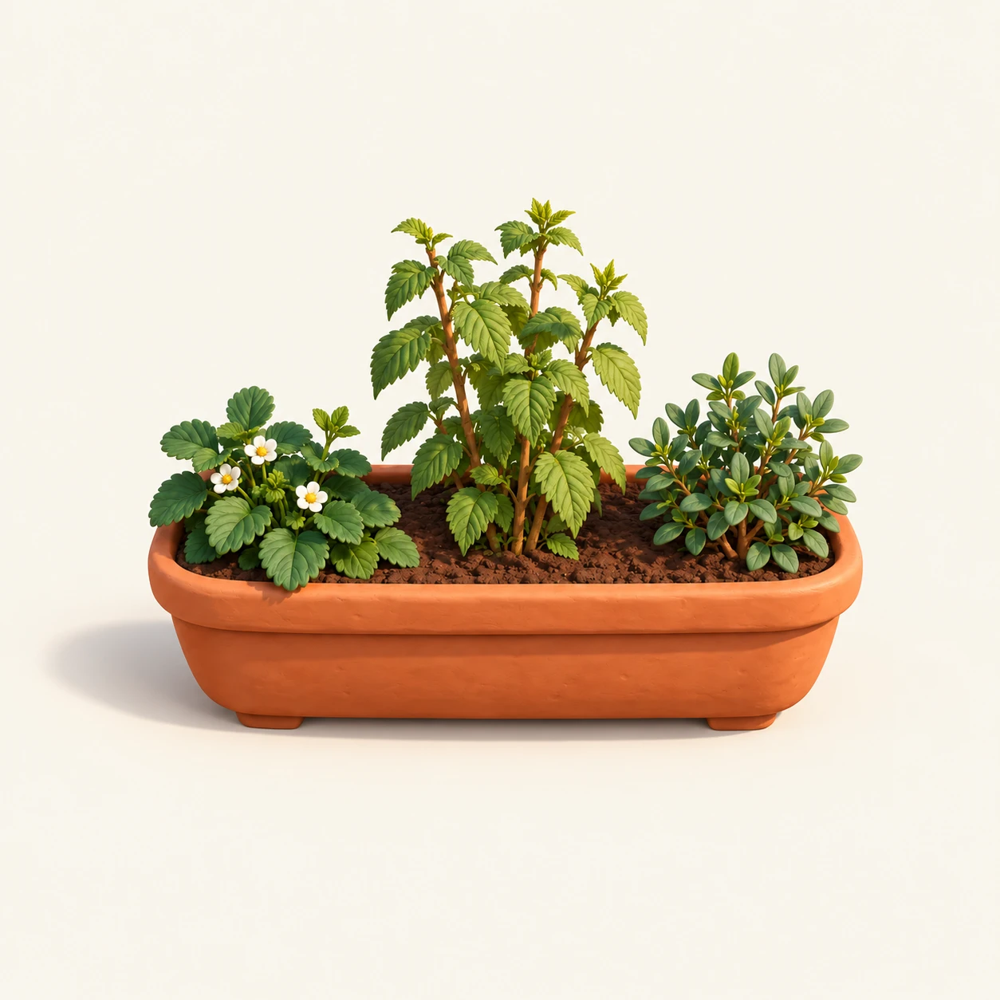
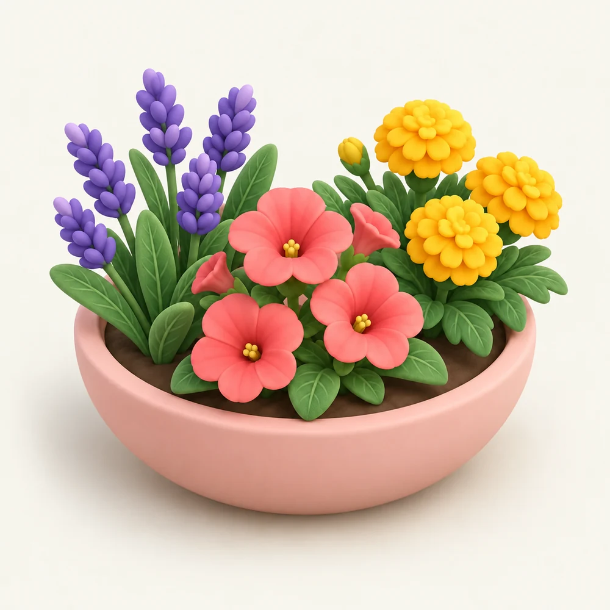
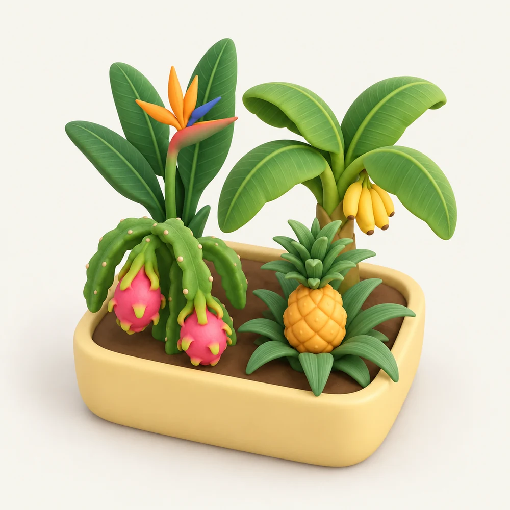
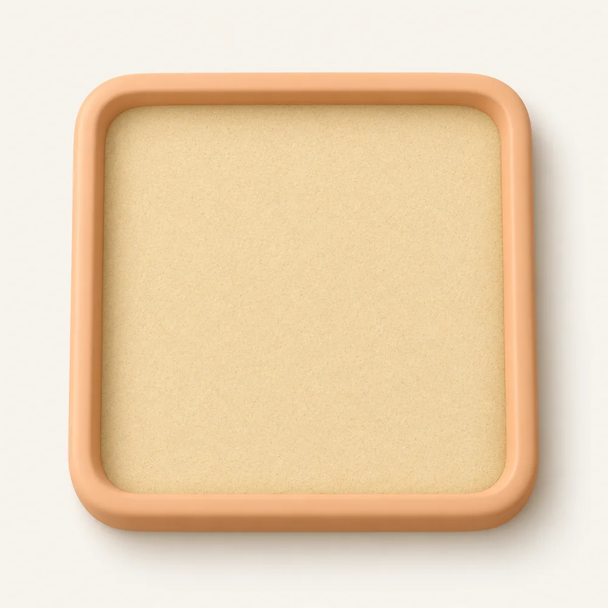

Огород
Черри и перчики в солнечном кашпо.

The ОгородВыращивайте черри, собирайте ягоды и слушайте птиц. Несколько спокойных минут — и вы снова ближе к природе.
Начните бесплатно · Полный сад — 3,99 € разово.

Растите в своём ритмеСолнечная грядка, яркие цветы или тихие узоры на песке. Выберите маленький ритуал по настроению.
Черри и перчики в солнечном кашпо.

Огурцы, кейл, горошек, укроп и брокколи для вашей миски.

Клубника, малина и голубика — собирайте касанием.

Лаванда, петунии и бархатцы для собственного букета.

Стрелиция, банан, питахайя и ананас.

Рисуйте грабельками, разглаживайте ладонью и наблюдайте, как узор исчезает.
Грядка или выбранный горшок крупным планом.
Компактный сад в сложенном виде и больше пространства в раскрытом.
Место для растений, навигации по садам и солнечного стола.
Одна покупка открывает все сады, дополнительные растения и оформление. Без подписки и рекламы.
Плановая цена в евро. Перед покупкой App Store покажет цену вашего региона. Покупки на этом сайте не проводятся.